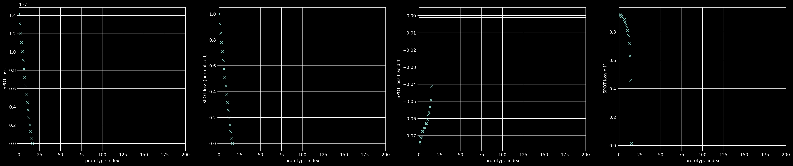
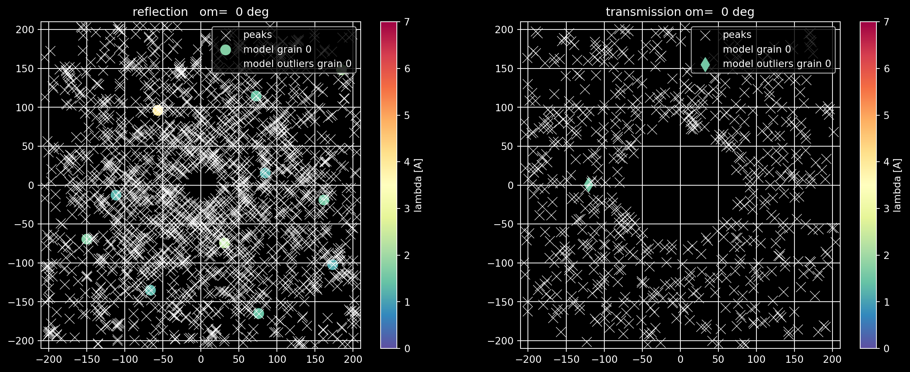
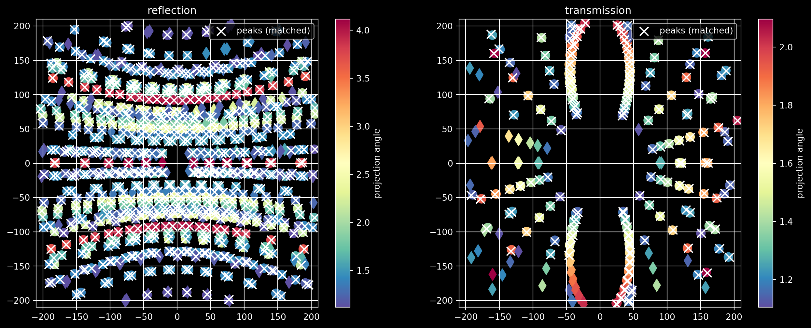

fname = '../../results/realdata_fega10_v10_demo/analyze_sample__fega10_v10__merged.h5'How to work with real data
Computing files
Before running the below commands make sure you have correctly installed and setup your environment.
Download the dataset to tmp directory (create it first). From the base folder run
laueotx realdata compute 0 --conf tmp/config_realdata_fega10_v10_demo.yaml -o results/realdata_fega10_v10_demo/ --n-grid 1000
laueotx realdata compute 1 --conf tmp/config_realdata_fega10_v10_demo.yaml -o results/realdata_fega10_v10_demo/ --n-grid 1000
laueotx realdata merge 0 1 --conf tmp/config_realdata_fega10_v10_demo.yaml -o results/realdata_fega10_v10_demo/ --n-grid 1000We will be analysing the merged output of the previous commands
spot_loss, s_obs, s_mod, inds_mod, inds_obs, p_lam, s2g_mod_assign, s2g_obs_assign, s2s_mod_assign, s2s_obs_assign = plotting.load_sample(fname)Code
omegas = range(0,360,4)Plot grain statistics
Code
plotting.print_nspots_per_det(inds_obs[1], s2g_obs_assign, tag='detected ')
plotting.print_nspots_per_det(inds_mod[1], s2g_mod_assign, tag='model ')spots=detected total n_spots=269181 assigned 15978 [5.94%]
spots=detected detector=0 n_spots=197047 assigned 13174 [6.69%]
spots=detected detector=1 n_spots= 72134 assigned 2804 [3.89%]
spots=model total n_spots= 18977 assigned 15978 [84.20%]
spots=model detector=0 n_spots= 15393 assigned 13174 [85.58%]
spots=model detector=1 n_spots= 3584 assigned 2804 [78.24%]Code
plotting.plot_grain_stats_plotly(s2s_mod_assign, s2s_obs_assign, s2g_mod_assign, s2g_obs_assign, s_obs, s_mod, inds_mod, inds_obs)n_grains=17Code
plotting.plot_grain_stats(s2s_mod_assign, s2s_obs_assign, s2g_mod_assign, s2g_obs_assign, s_obs, s_mod, inds_mod, inds_obs)n_grains=17
Plot prototype loss
Code
plotting.plot_spot_loss(fname, xscale='linear', yscale='linear', n_max=200)
Plot spot assignment
Code
plotting.scatter_spots_assignment_per_angle_interactive(s_obs=s_obs, inds_obs=inds_obs, s_mod=s_mod, inds_mod=inds_mod, spot_mod_assign=s2g_mod_assign, ia=0, omegas=omegas, color_obs='w', lw=0.5)
Plot spot match with wavelength
Code
plotting.scatter_spots_obs_mod_per_angle_interactive(s_obs=s_obs, inds_obs=inds_obs, s_mod=s_mod, inds_mod=inds_mod, p_lam=p_lam, spot_mod_assign=s2g_mod_assign, ia=0, ig=0, omegas=omegas, lambda_lims=[0, 7], lam_vals=False, color_obs='w', lw=0.5)
Plot match per grain
Code
plotting.scatter_spots_assignment_per_grain_interactive(s_obs=s_obs, inds_obs=inds_obs, s_mod=s_mod, inds_mod=inds_mod, p_lam=p_lam, s2g_mod_assign=s2g_mod_assign, s2g_obs_assign=s2g_obs_assign, ig=0, omegas=omegas, color_obs='w')